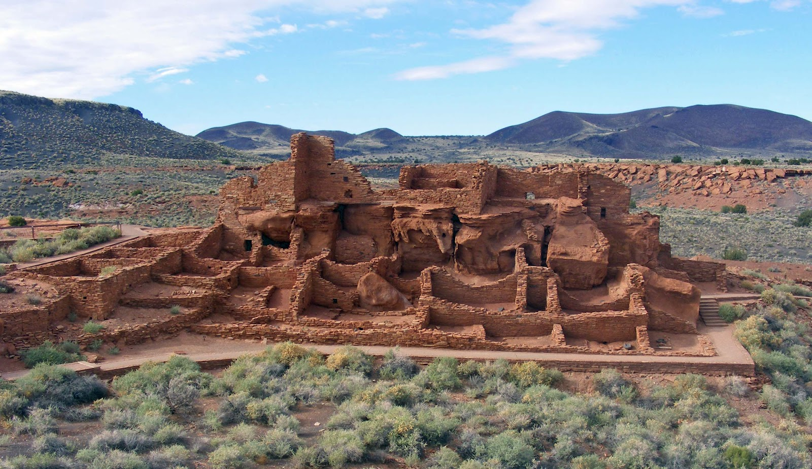

Wupatki Ruins

Wupatki is a large ruins-complex near Flagstaff, AZ. It was home to some of the Pueblo Native Americans, beginning around 500 C.E. It consists of 100 rooms, including a large community room, as well as a nearby ballcourt.
Wupatki is a large ruins-complex near Flagstaff, AZ. It was home to some of the Pueblo Native Americans, beginning around 500 C.E. It consists of 100 rooms, including a large community room, as well as a nearby ballcourt.